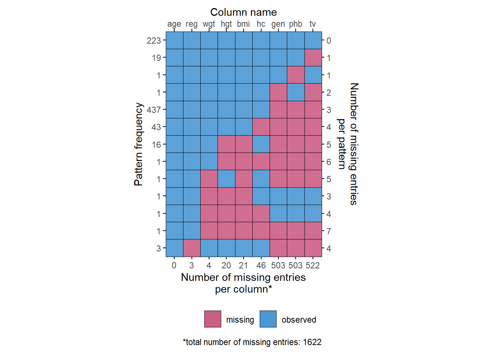

Quarto enables you to weave together content and executable code into a finished document. To learn more about Quarto see https://quarto.org.
Meet the boys data
The boys data from the mice package (Van Buuren and Groothuis-Oudshoorn 2011) in R(R Core Team 2023) is a random sample of 10% from the cross-sectional data used to construct the Dutch growth references 1997. Variables gen and phb are ordered factors. reg is a factor.
The following table shows the first 6 rows of the boys data.
head(mice::boys)
age hgt wgt bmi hc gen phb tv reg
3 0.035 50.1 3.650 14.54 33.7 <NA> <NA> NA south
4 0.038 53.5 3.370 11.77 35.0 <NA> <NA> NA south
18 0.057 50.0 3.140 12.56 35.2 <NA> <NA> NA south
23 0.060 54.5 4.270 14.37 36.7 <NA> <NA> NA south
28 0.062 57.5 5.030 15.21 37.3 <NA> <NA> NA south
36 0.068 55.5 4.655 15.11 37.0 <NA> <NA> NA south
age hgt wgt bmi hc gen phb tv reg
1 0.035 50.1 3.650 14.54 33.7 <NA> <NA> NA south
2 0.038 53.5 3.370 11.77 35.0 <NA> <NA> NA south
3 0.057 50.0 3.140 12.56 35.2 <NA> <NA> NA south
4 0.060 54.5 4.270 14.37 36.7 <NA> <NA> NA south
5 0.062 57.5 5.030 15.21 37.3 <NA> <NA> NA south
6 0.068 55.5 4.655 15.11 37.0 <NA> <NA> NA south
The boys set is incomplete
Not every value in the mice::boys set is observed. This may pose problems with the analysis of the boys data. To get an idea about the problem, we can use missing data patterns. Hanne Oberman (2023) created the ggmice package to create a ggplot2(Wickham 2016) type plot of the missing values in the boys data.
library(mice)
Attaching package: 'mice'
The following object is masked _by_ '.GlobalEnv':
boys
The following object is masked from 'package:stats':
filter
The following objects are masked from 'package:base':
cbind, rbind
library(ggmice)
Attaching package: 'ggmice'
The following objects are masked from 'package:mice':
bwplot, densityplot, stripplot, xyplot
library(magrittr)# visualize ggplot2-like missing data patternmice::boys |> ggmice::plot_pattern()

Descriptions of the boys data
The boys data contains 748 rows and 9 columns. In total there are 1622 missing values in the boys data, with the highest number of missing values in the tv column.
R Core Team. 2023. R: A Language and Environment for Statistical Computing. Vienna, Austria: R Foundation for Statistical Computing. https://www.R-project.org/.
Van Buuren, Stef, and Karin Groothuis-Oudshoorn. 2011. “mice: Multivariate Imputation by Chained Equations in r.”Journal of Statistical Software 45 (3): 1–67. https://doi.org/10.18637/jss.v045.i03.
Wickham, Hadley. 2016. Ggplot2: Elegant Graphics for Data Analysis. Springer-Verlag New York. https://ggplot2.tidyverse.org.
![]()